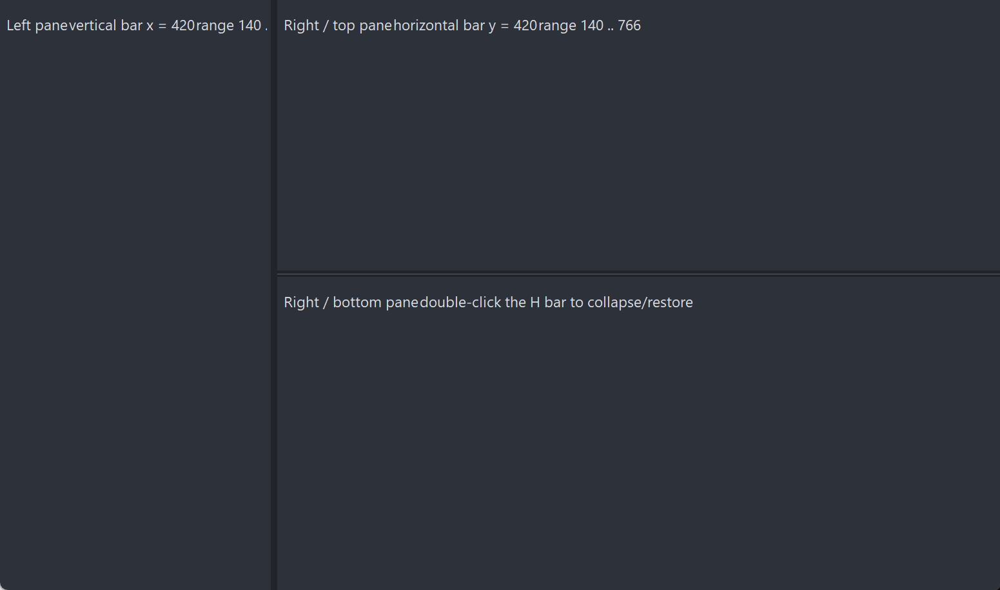

PsSplitter
An owner-drawn splitter bar for FreeBASIC Win32 applications: a draggable divider that sits between two panes, shows a resize cursor when the mouse is over it, and tells you where the user dragged it to.
It does not own, create, size or even know about the panes on either side of it. The control maintains exactly one number — the bar's position — moves itself while the user drags, and calls you back. Laying out whatever is to the left and right (or above and below) is entirely yours, and so is deciding what the limits are. That is the trade: you get correct drag mechanics, cursor handling, capture discipline and hot-tracking for free, and you still write your own layout pass.
It draws itself entirely — there is no system control underneath, and nothing about its appearance depends on the visual style the user happens to be running. Both colours it paints are ones you can set, and a paint callback replaces the built-in painter outright.
What it looks like

One vertical bar and one horizontal bar dividing three panes. The bars are the thin lines; the panes are the host's own windows. The control does not own, create or know about them — it moves itself and reports its new position, and the host resizes whatever sits either side.
Requirements
Files to copy into your project:
| File | Purpose |
|---|---|
PsSplitter.bi | Declarations — types, callbacks, constants, function prototypes |
PsSplitter.inc | Implementation |
PsBufferPaint.bi | The flicker-free drawing surface the control paints through |
PsBufferPaint.inc | Its implementation |
AfxNova is required. The control is built on CWindow, and PsBufferPaint draws through AfxNova\CGdiPlus.inc. Sources include AfxNova relative to the workspace root (#include once "AfxNova\CWindow.inc"), so builds need the workspace root on the include path:
fbc64.exe -i "C:\dev" main.basInclude order. PsSplitter.inc pulls in its own .bi, which pulls in PsBufferPaint.bi. The two implementation files are included in this order, after the AfxNova headers:
#include once "windows.bi"
#include once "AfxNova\CWindow.inc"
#include once "AfxNova\AfxStr.inc"
#include once "AfxNova\AfxGdiplus.inc"
using AfxNova
#include once "PsBufferPaint.inc"
#include once "PsSplitter.inc"GDI+ must be running before the first repaint and must outlive the last one. The control renders through GDI+, so bracket your message loop:
dim as ULONG_PTR gdipToken = AfxGdipInit()
' ... create windows, run the message loop ...
AfxGdipShutdown( gdipToken )AfxGdipShutdown must come after every window is destroyed, because each repaint builds and tears down a PsBufferPaint.
Never name an identifier ok. GDI+ defines Ok = 0 as a Status enum value in namespace AfxNova, and hosts customarily say using AfxNova. An existing variable, parameter or function called ok becomes a duplicate definition the moment you adopt these files. Use bOK instead.
There is no pump obligation. The control needs no message filter, no IsDialogMessage and no accelerator cooperation. It never takes focus and handles no keys, so an ordinary GetMessage / TranslateMessage / DispatchMessage loop is enough.
Quick start
A vertical bar between a left and a right pane. The panes here are two child windows the host already owns; the control never sees them.
dim shared as HWND hSplit
dim shared as long gBarW ' the bar's thickness, DPI-scaled once in the layout pass
' Create it. The control is created zero-sized and hidden.
hSplit = PsSplitter_Create( hWndParent, IDC_MYFORM_SPLITTER, PSSPLITTER_VERTICAL )
' Colours for the built-in painter: idle, and hot/dragging.
PsSplitter_SetColors( hSplit, BGR(53,59,69), BGR(90,98,112) )
' Be told when the user drags it.
PsSplitter_SetPosChangedCallback( hSplit, @MySplit_PosChanged )
' Initial position: the bar's x, in the parent's client coordinates. Silent.
PsSplitter_SetPos( hSplit, 240 )Your layout pass owns the bar's size, its cross-axis geometry, and the limits:
sub MyForm_Layout( byval hwnd as HWND )
dim pWindow as CWindow ptr = AfxCWindowPtr(hwnd)
if pWindow = 0 then exit sub
dim as RECT rc : GetClientRect( hwnd, @rc )
gBarW = pWindow->ScaleX( 6 ) ' bar thickness = the grab area
dim as long minPaneW = pWindow->ScaleX( 80 )
' The control never derives its own limits -- push them in from here.
PsSplitter_SetRange( hSplit, minPaneW, rc.right - minPaneW - gBarW )
SetWindowPos( hSplit, 0, _
PsSplitter_GetPos( hSplit ), rc.top, gBarW, rc.bottom - rc.top, _
SWP_NOZORDER or SWP_SHOWWINDOW )
MyForm_LayoutPanes( PsSplitter_GetPos( hSplit ) )
end subAnd the callback, which is where the two panes are resized:
sub MyForm_LayoutPanes( byval nPos as integer )
dim as RECT rc : GetClientRect( HWND_FRMMAIN, @rc )
dim as long xRight = nPos + gBarW ' the bar's TRAILING edge
SetWindowPos( hLeftPane, 0, rc.left, rc.top, nPos - rc.left, rc.bottom - rc.top, _
SWP_NOZORDER )
SetWindowPos( hRightPane, 0, xRight, rc.top, rc.right - xRight, rc.bottom - rc.top, _
SWP_NOZORDER )
end sub
sub MySplit_PosChanged( byval hSplitter as HWND, byval newPos as integer, _
byval nPhase as integer )
' The control has already moved ITSELF. Lay out only what it does not own.
MyForm_LayoutPanes( newPos )
' BEGIN and END bracket the drag -- use them for work too expensive to do per pixel.
select case nPhase
case PSSPLITTER_PHASE_BEGIN : MyPanes_SuspendReflow()
case PSSPLITTER_PHASE_END : MyPanes_ResumeReflow() : gConfig.SplitPos = newPos
end select
end subThat is the whole minimum. Everything below is refinement.
Concepts
The orientation is named for the BAR's own axis
This is the first thing to get right, because it is easy to get backwards:
| Orientation | The bar is | It separates | It drags | Cursor | nPos is |
|---|---|---|---|---|---|
PSSPLITTER_VERTICAL | a vertical line | a left and a right pane | horizontally | IDC_SIZEWE | the bar's x |
PSSPLITTER_HORIZONTAL | a horizontal line | a top and a bottom pane | vertically | IDC_SIZENS | the bar's y |
A vertical splitter does not split a window vertically into a top and a bottom — it is a vertical bar, and it splits left from right.
The orientation is fixed for the control's lifetime. A host that switches split modes destroys the control and creates the other one; there is no setter, because an nPos whose meaning changed axis underneath a stale range is worse than a rebuild.
The position is the bar's leading edge, in the PARENT's client coordinates
Exactly one number, and it means exactly one thing:
PSSPLITTER_VERTICAL nPos = the x of the bar's LEFT edge, in parent client coords
PSSPLITTER_HORIZONTAL nPos = the y of the bar's TOP edge, in parent client coordsIt is the leading edge, not the centre and not the trailing edge — so the right pane of a vertical split starts at nPos + barWidth, not at nPos. The parent whose client space this is, is the hWndParent you passed to PsSplitter_Create; the control captures it once and never changes it. nMin and nMax live in the same space, and so does the newPos your callback receives.
The width you give the bar IS the grab area
There is no separate hit margin. The whole client rectangle is the bar, and any mouse move that reaches the control means the cursor is on it. If you want a thin visual line inside a comfortable grab area, size the control comfortably and paint a thin line inside it with a paint callback.
The three drag phases
A user drag produces one BEGIN, zero or more MOVEs, and one END, in that order, all through the single SPL_PosChangedCallback:
| Phase | When | newPos | What a host typically does |
|---|---|---|---|
PSSPLITTER_PHASE_BEGIN | The user just grabbed the bar. Fired from the button-down, before the bar has moved at all. | The current, unchanged position | Start the gesture: hide anything expensive (scrollbars), suspend a reflow, snapshot state |
PSSPLITTER_PHASE_MOVE | The position actually changed. Never fired when the clamped position works out the same as before. | The new position, already applied | Lay out the two panes. This is the per-pixel work, so keep it cheap |
PSSPLITTER_PHASE_END | The drag ended: the button came up, or the capture was lost. | The final position | Commit: resume the reflow, persist the position to config |
END always arrives, including when another window steals the capture mid-drag — a stolen capture is treated as an implicit button-up, keeping the position the user dragged to, because every intermediate position has already been applied and there is nothing to undo. By the time END runs the state is consistent: PsSplitter_IsDragging already returns FALSE.
By the time any of the three fires, the control has already moved itself. Do not move the bar from inside the callback; lay out the panes and stop. Re-placing the bar from your own layout pass is harmless — it is a no-op — but it is not something the callback needs to do.
Who owns what
| Owned by the control | Owned by you |
|---|---|
| The bar's position along its drag axis | The bar's thickness, its cross-axis position and its extent |
| Clamping to the range | Computing the range and pushing it in with SetRange |
| Cursor, hover, capture, the drag arithmetic | Everything on both sides of the bar |
| Its own repaint | Repainting your panes |
| — | Collapse / restore, if you want it |
The control never derives the range from the parent's client rect. It cannot: it has no idea what else lives in that space — a toolbar, another splitter, a scrollbar parked between the pane and the bar. Recompute the limits in your own WM_SIZE and call PsSplitter_SetRange.
Programmatic changes are silent
PsSplitter_SetPos and PsSplitter_SetRange clamp, move the bar and repaint, and fire nothing. They are the host telling the control where it put the splitter, not the user moving it — Win32's own setter/notification split. It means you can call either from inside the position callback without re-entering yourself, and it means a programmatic move must be followed by your own pane layout and repaint, because no callback will come back to do it.
The control re-syncs when you move it
If you move the bar yourself — a parent resize, a pane collapse, a plain SetWindowPos in a layout pass — the control notices through WM_WINDOWPOSCHANGED and records the new leading edge as its position. So PsSplitter_GetPos always agrees with where the bar actually is, and a host that repositions the splitter during a layout pass cannot desync it.
That re-sync is an observation, not a change: nothing is clamped and nothing is notified. If you SetWindowPos the bar outside its own range, GetPos reports the out-of-range value honestly; the next drag or SetPos pulls it back in.
The re-sync is skipped while a drag is in progress, where the control is the one doing the moving.
Hover, and how it is cleared
The bar paints brighter while the mouse is over it. WM_MOUSELEAVE is requested, but it is not reliably delivered when the cursor leaves fast, so the control also runs a 100 ms polling timer while it is hot, as a safety net. Whip the mouse off the bar at any speed and the highlight clears.
While a drag is live the hover state is pinned true, because under capture the cursor legitimately roams far outside the bar's own rectangle and the bar should not go cold in the middle of the gesture. When the drag ends, hover is re-derived from where the cursor actually finished.
Hiding the control — collapsing a pane, say — ends any drag and clears hover, so the highlight cannot reappear stale the next time you show it.
Mouse capture
The control takes the capture on the button-down and releases it on the button-up, because a drag needs the down/up pairing guaranteed. Capture is taken before your message callback runs, so a callback that claims the down-message still gets a clean, matched release — that is what makes double-click collapse work.
The consequence to know about: your message callback's return value is ignored for WM_LBUTTONUP. A host allowed to suppress that message would strand the capture, and every subsequent click anywhere in the application would be routed to the splitter.
Double-click
The control's window class carries CS_DBLCLKS, so a rapid second click arrives as WM_LBUTTONDBLCLK. The control itself does nothing special with it — it runs the same capture-and-begin-drag bookkeeping as an ordinary down, which it must, or the trailing up would release a capture that was never taken.
Collapse/restore is therefore yours to implement, and claiming WM_LBUTTONDBLCLK from the message callback is the supported way: return TRUE, no drag starts, and the trailing WM_LBUTTONUP is harmless. Inside that handler, PsSplitter_SetPos moves the bar silently, so repaint your panes yourself.
Note the sequence is down, up, dblclk, up — the first click of a double-click is a real click, and it will have begun and ended a zero-length drag (one BEGIN, one END) before the double-click arrives.
Everything is raw pixels
Nothing in this control is DPI-scaled for you. Positions, limits, the bar's thickness — all of it is pixels in the parent's client space, and you scale them yourself, typically with pWindow->ScaleX(...) / ScaleY(...). There is nothing to scale internally: the control measures no text and owns no font.
Lifetime
The control frees itself when its window is destroyed, killing its hover timer and releasing any capture it still holds. It loads no resource that needs freeing — the resize cursors are shared system cursors, and you must never DestroyCursor them. Destroy the parent and you are done.
Behaviour and limits
Firm properties of the control, not settings:
- It does not create, size, or know about the panes. No pane handle is stored and no pane is ever moved. Your callback does that work.
- It does not compute its own limits. Until
PsSplitter_SetRangeis called the range is0 .. &h7FFFFFFF, i.e. effectively unbounded. Recompute and re-set the limits from your ownWM_SIZE. - The orientation is fixed at creation. There is no setter. Destroy and recreate to switch.
- The bar's thickness is the grab area. No separate hit margin exists.
- Limits are absolute, not proportional.
SetRangetakes two coordinates in the parent's client space. Nothing is expressed as a fraction or a percentage, and nothing rescales when the parent resizes — which is exactly why you must re-push the range on every resize. - An inverted range (
nMax < nMin) pins the bar atnMinrather than rejecting the call. A host recomputing limits onWM_SIZElegitimately produces one when the window is too small to hold both panes, and pinning is the sane result. - Programmatic setters are silent.
PsSplitter_SetPosandPsSplitter_SetRangenever fire the position callback. - The control moves only along its drag axis. Cross-axis position and size are read back from the window and preserved, never invented. If the bar also has to move sideways — a horizontal bar living inside the right pane of a vertical split, for instance — that is your
SetWindowPos. - No keyboard support at all. The control is not a tabstop, never takes focus, and handles no keys. Keyboard resizing is the host's, through
PsSplitter_SetPos. - No visible chrome beyond a flat fill. The built-in painter fills the whole bar with one colour. Grip dots, a centred hairline or an etched edge are a paint callback's job.
- No collapse, no restore, no snap, no double-click behaviour of its own. The control holds one number and no memory of a previous one.
- No enabled/disabled state. There is no
SetEnabled. Hide the control, or stop laying it out, when a split is not available. - No tooltip support. There is no tooltip callback and no tooltip window is created. Add your own tool over the control's
HWNDif you want one. - The message callback's result is ignored for
WM_LBUTTONUP, so a host cannot strand the capture. - The message callback is not a general message hook. It sees only
WM_SETCURSOR,WM_LBUTTONDOWN,WM_LBUTTONDBLCLK,WM_MOUSEMOVEandWM_LBUTTONUP. It is never called forWM_PAINT,WM_MOUSELEAVE,WM_TIMER,WM_SIZEorWM_WINDOWPOSCHANGED. WM_SETCURSORreaches the callback only when the hit-test code isHTCLIENT, or a drag is in progress. Mid-drag the control claims the cursor unconditionally, because under capture the hit-test code can be anything at all — the cursor is over the panes, or off the window.- Nothing is DPI-scaled for you.
API reference
Creation
| Function | Description |
|---|---|
PsSplitter_Create( hWndParent, CtrlID [, nOrientation] ) as HWND | Creates the control as a child of hWndParent and returns its window handle. CtrlID becomes the window's GWLP_ID, so GetDlgItem finds it. nOrientation is PSSPLITTER_VERTICAL (the default) or PSSPLITTER_HORIZONTAL, and is fixed for the control's lifetime; any value other than PSSPLITTER_HORIZONTAL is taken as PSSPLITTER_VERTICAL. hWndParent is captured as the coordinate space every position is measured in. Created with WS_CHILD or WS_CLIPSIBLINGS or WS_CLIPCHILDREN — zero-sized and not visible — so place, size and show it with SetWindowPos. The size you give it along the drag axis is the grab area. |
Position and range
All values are the bar's leading edge in the parent's client coordinates — x for a vertical bar, y for a horizontal one.
| Function | Description |
|---|---|
PsSplitter_GetPos( hSplit ) as integer | The current position. Always agrees with where the bar actually is: the control re-syncs from its own window rect whenever the host moves it. Returns 0 for an invalid handle. |
PsSplitter_SetPos( hSplit, nPosition ) | Clamps into the current range, moves the bar and repaints. Silent — fires no notification, so lay out and repaint your panes yourself. No-op when the clamped value already matches the current position. |
PsSplitter_SetRange( hSplit, nMin, nMax ) | Sets the limits a drag clamps to. Also clamps the current position into the new range, moving and repainting the bar if it has to — silently, because you set the range and already know. An inverted range (nMax < nMin) pins the bar at nMin rather than failing. The control never derives these limits itself; recompute and re-set them from your own WM_SIZE. |
PsSplitter_GetMin( hSplit ) as integer | The lower limit. Defaults to 0. Returns 0 for an invalid handle. |
PsSplitter_GetMax( hSplit ) as integer | The upper limit. Defaults to &h7FFFFFFF — effectively unbounded until PsSplitter_SetRange is called. Returns 0 for an invalid handle, which is not the default value, so treat a 0 here as a bad handle rather than as a range. |
Geometry and layout
There are no geometry setters, because the control owns no geometry beyond its position along the drag axis. Size and place it with SetWindowPos like any other window; the control reads its cross-axis position and its size back from the window and preserves them, and records any move you make as its new position.
| Function | Description |
|---|---|
PsSplitter_GetOrientation( hSplit ) as integer | PSSPLITTER_VERTICAL or PSSPLITTER_HORIZONTAL — whichever was fixed at creation. Returns PSSPLITTER_VERTICAL for an invalid handle. |
PsSplitter_IsHot( hSplit ) as boolean | TRUE while the mouse is over the bar. Pinned TRUE for the whole of a drag, even while the cursor is far outside the bar, and re-derived from the cursor's real position when the drag ends. |
PsSplitter_IsDragging( hSplit ) as boolean | TRUE between the button-down and the button-up (or a lost capture). Already FALSE by the time your PSSPLITTER_PHASE_END callback runs. |
Appearance
| Function | Description |
|---|---|
PsSplitter_GetBackColor( hSplit ) as COLORREF | The idle fill colour. Returns 0 for an invalid handle. There is no matching getter for the hot colour. |
PsSplitter_SetColors( hSplit, backclr, hotclr ) | Sets both colours at once and repaints. backclr is the idle fill, hotclr the fill used while the bar is hot or being dragged. Used by the built-in painter only — a paint callback ignores them both. |
Callback registration
| Function | Description |
|---|---|
PsSplitter_SetPaintCallback( hSplit, usersub ) | Installs a renderer that draws the whole bar instead of the built-in painter. Repaints. |
PsSplitter_SetMessageCallback( hSplit, userfunc ) | Installs an observer for the control's mouse and cursor messages. |
PsSplitter_SetPosChangedCallback( hSplit, usersub ) | Installs the handler told when the user moves the splitter. |
All three are optional and independent. Passing a null pointer to any of them clears that callback; clearing the paint callback restores the built-in painter.
Colors
There is no colours struct. The control paints one thing — a flat bar — so its whole colour surface is two COLORREF values, set together by PsSplitter_SetColors:
| Colour | Default | Paints |
|---|---|---|
BackColor | BGR(53,59,69) | The whole bar, idle |
HotColor | BGR(90,98,112) | The whole bar, while the mouse is over it or a drag is in progress |
Both ship with a usable dark-theme default, so a control you never call PsSplitter_SetColors on still looks right. Only BackColor has a getter.
Which colour wins
The built-in painter picks one of the two per repaint:
hot OR dragging > idleThere is no third, distinct dragging colour: a live drag renders as hot, which reads correctly for a bar that is being held. The two states are still handed to a paint callback separately (isHot and isDragging), so a custom renderer can draw a distinct dragging look if it wants one.
There is no disabled colour, because there is no disabled state.
What the painter draws
The built-in painter fills the entire client rectangle with the chosen colour, through PsBufferPaint. That is all of it. A grip, a hairline, an etched border or a gradient is a paint callback's job.
Callbacks
Position changed
type SPL_PosChangedCallbackSub as sub( byval hSplitter as HWND, byval newPos as integer, _
byval nPhase as integer )The user moved the splitter. newPos is the bar's new leading edge in the parent's client coordinates; nPhase is one of PSSPLITTER_PHASE_BEGIN, PSSPLITTER_PHASE_MOVE or PSSPLITTER_PHASE_END. See The three drag phases above for what each one means and what a host does with it.
The control has already clamped the position and moved itself by the time you are called. Lay out the two panes and nothing else.
It does not fire for PsSplitter_SetPos or PsSplitter_SetRange. Programmatic setters are silent, which is what makes it safe to call either one from inside this very callback.
A MOVE is never fired for a position that works out the same as the previous one, so a drag held against a limit goes quiet rather than repeating.
The same callback can serve any number of splitters — hSplitter says which one, and PsSplitter_GetOrientation says which axis it moved on.
Paint
type SPL_PaintCallbackSub as sub( byval p as PSSPLITTER_PAINTINFO ptr )Draws the whole bar instead of the built-in painter — setting a callback replaces that default entirely, and the two colours stop being used. Paint through p->b, the control's double buffer for this repaint, using p->rcClient — do not touch the screen DC.
Nothing is drawn for you before the callback runs: the callback is responsible for every pixel of the bar, background included.
PSSPLITTER_PAINTINFO carries:
| Field | Meaning |
|---|---|
hSplitter | The control, so the callback can query it |
b | The control's PsBufferPaint for this repaint (borrowed, not owned) |
rcClient | The whole bar, in client coordinates |
nOrientation | PSSPLITTER_VERTICAL or PSSPLITTER_HORIZONTAL — one callback can serve both kinds of bar |
isHot | The mouse is over the bar. Stays TRUE for the whole of a drag |
isDragging | A drag is in progress |
A paint callback that fills a rectangle covering the whole control erases everything under it. For a splitter that is exactly what you want from the first call — fill the bar, then add your line or grip on top. The trap is a helper that fills as a side effect: a "draw a border" primitive that fills unconditionally will wipe out everything drawn before it, and the result still compiles, still runs, and still renders a plausible-looking bar.
Message
type SPL_MessageCallbackFunc as function( byval m as PSSPLITTER_MESSAGEINFO ptr ) as booleanObserves the control's mouse and cursor messages as they arrive. Return TRUE to suppress the control's own handling of that message, FALSE to let it proceed.
PSSPLITTER_MESSAGEINFO carries:
| Field | Meaning |
|---|---|
hSplitter | The control the message arrived at |
uMsg | The message |
wParam | Its wParam |
lParam | Its lParam |
The callback is invoked for exactly these messages, and no others:
| Message | Effect of returning TRUE |
|---|---|
WM_SETCURSOR | The control does not set its resize cursor, so you own the cursor for this message. Only delivered when the hit-test code is HTCLIENT, or a drag is in progress. |
WM_LBUTTONDOWN | No drag starts — no BEGIN is notified. The capture has already been taken and is released normally on the trailing up. |
WM_LBUTTONDBLCLK | As above. This is the supported way to implement collapse/restore. |
WM_MOUSEMOVE | Neither the drag update nor the hover update runs for this move. |
WM_LBUTTONUP | Your return value is ignored. The control holds the mouse capture for the duration of a drag and this up-message is the capture's exit; a callback allowed to suppress it would strand the capture and route every subsequent click in the application here. |
Constants
' Named for the BAR's own axis.
enum PSSPLITTER_ORIENTATION
PSSPLITTER_VERTICAL = 0 ' vertical bar, left/right panes -> IDC_SIZEWE, nPos = x
PSSPLITTER_HORIZONTAL = 1 ' horizontal bar, top/bottom panes -> IDC_SIZENS, nPos = y
end enum
enum PSSPLITTER_PHASE
PSSPLITTER_PHASE_BEGIN = 0 ' the user just grabbed the bar; newPos = current position
PSSPLITTER_PHASE_MOVE = 1 ' the position actually changed
PSSPLITTER_PHASE_END = 2 ' the drag ended (button up, or capture lost); final position
end enum| Constant | Value | Meaning |
|---|---|---|
IDT_CSPLITTER_HOTTRACK | &hCB20 | Timer id for the hover poll. Timer ids are per-window, so every instance can share this one — but do not reuse it for a timer of your own on a splitter's HWND. |
PSSPLITTER_HOTTRACK_MS | 100 | Hover poll interval, in milliseconds. The safety net that clears the highlight when WM_MOUSELEAVE is not delivered. |